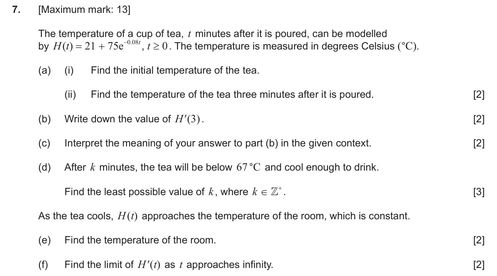
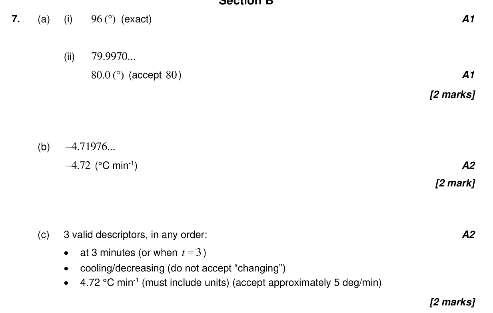
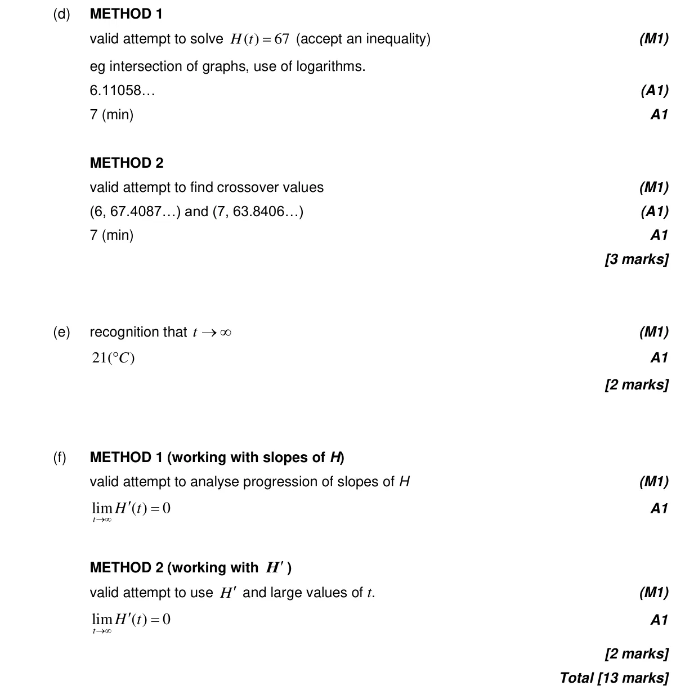

13 marks P2 TZ1 Section B Calculator 5.1 Introduction to calculus2.9 Exponential and logarithmic functions1.7 Laws of exponents and logarithms2.10 Solving equations graphically and analytically Question Hide breakdown abcdef Markscheme 